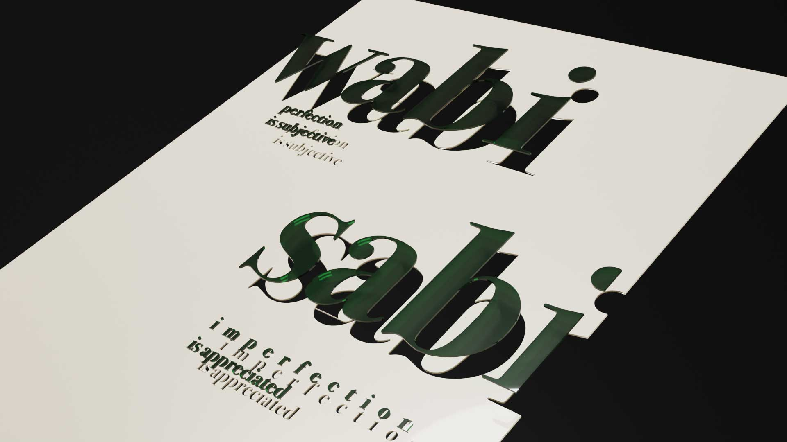
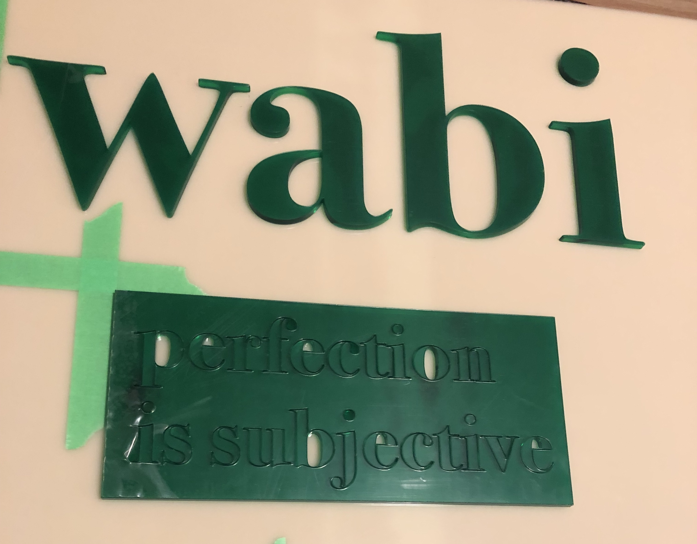

2 Weeks
Art/ School Work
Graphic Design
3D Visualization
Handicraft
For one of my school projects, we were invited to create art installation for a month long gallery in our campus. The requirement is that our physical installation have to say a message in sentences and have typography on the physical piece. The size of the physical piece also have to be close to our own height. Our program focuses heavily on digital design so this was an assignment to exercise on how digital will translate into a physical piece.
For this assignment, I did not have a message in mind when I first started so I would look at what are some materials I could use and how it has been used before.
Even after the research I was lost on the message so I was looking back at some personal posters I did a while back as reminders to myself. I gravitated to the one that has help me through many tough times called “Wabi Sabi”.
• When cutting out acrylic, the laser cuts off more material so there is no tight fitting for cut outs. Pictured below was my original idea rendered digitally.  • The scale of laser cutting letters can only be minimized so far. This meant I needed to redesign and layout the text with a bigger scale. • When placing the words on the board, I had a template to keep words straight but some letters gets caught and took some shaving and multiple tries to get it right.
.jpg)
.jpg)
.jpg)
• Be ready for your digital design to fail or be impossible physically so have a few backup ideas on how to construct it.
• Next time as part of the research, there must be a section on adhesives as I almost did not get the acrylic bonding glue in time for this project once I found out about it.
• Look at all the viewing angles the installation can be seen. My signage could be seen outside as it was leaning against a window which I would have liked the gluing process be more even so the backside would be presentable as well.